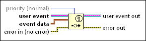

Generate User Event Function
Owning Palette: Events Functions
Requires: Base Development System
Broadcasts the user event you wire to the user event input and sends the user event and associated event data to each Event structure registered to handle the event.

 Add to the block diagram Add to the block diagram |
 Find on the palette Find on the palette |